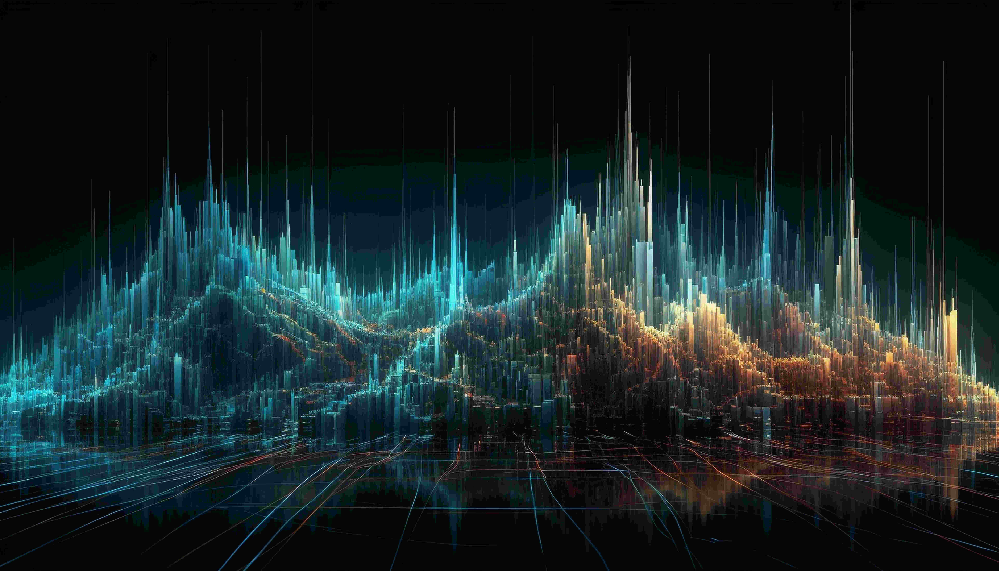

Když jsme obdrželi pozvání k hostující přednášce na České zemědělské univerzitě v Praze, položili jsme si jednoduchou otázku: co může investigativní agentura nabídnout studentům obchodní administrativy? Odpověď se brzy ukázala – překvapivě mnoho, a to napříč celou škálou aktuálních témat.
Sylvester1. listopad 20256 minut čtení
Datové banky: Jak instituce nenápadně oslabují naše soukromí
Vítejte u druhého dílu třídílné série o osobních datech. V minulém článku jsme si ukázali, proč jsou vaše osobní údaje zároveň tím nejcennějším, co vlastníte, i jednou z vašich největších slabin. Tentokrát půjdeme o krok dál a rozebereme, jak svá data předáváte každý den – často bez povšimnutí. Těmto momentům budeme říkat informační transakce. Protože ano, v dnešním světě obnáší téměř každá interakce výměnu informací.

Sylvester28. října 20255 minut čtení
Skutečná hodnota vašich dat
Nová legislativa v Dánsku přiznává autorská práva k obličeji, tělu a hlasu jednotlivce – a reaguje tak na nárůst deepfake obsahu bez souhlasu dotčených osob. Nepřímo tím uznává, že k těmto údajům máte určité právo. Zároveň však každý váš klik, vyhledávání či zpráva systematicky doplňují reklamní profily, které datoví zprostředkovatelé prodávají korporacím, státním institucím i nebezpečným aktérům – často bez vašeho vědomí či souhlasu. Technologičtí giganti jako OpenAI nebo Meta dnes po těchto datech též sahají, aby na nich mohli trénovat miliardové jazykové modely. V prvním dílu této třídílné série se podíváme na to, proč jsou vaše informace tím nejcennějším, co vlastníte – a jak nad nimi znovu získat kontrolu.
Sylvester24. října 20255 minut čtení
Konec Chat Controlu?
Souboj o digitální práva zatím nevypadá příliš nadějně. Příklady masového dohledu v Číně, Velké Británii nebo nově i ve Spojených státech ukazují, že snahy omezit anonymitu a soukromí nejsou jen teoretické. Kromě konkrétních legislativních kroků se navíc stále častěji objevuje i subjektivní pocit, že státní kontrola sílí. A pokud vám to tak připadá, rozhodně nejste sami.